本说明基于当前项目中的实际 Manim 工具箱自动生成。每个积木只介绍一次；“常用”分类中的重复项归入其正式分类。
manim。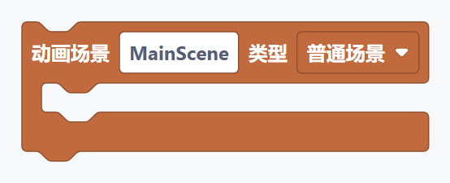
说明： 一个完整动画的入口。把创建对象、播放动画和等待等语句放入场景内部。
visual_python_manim_scene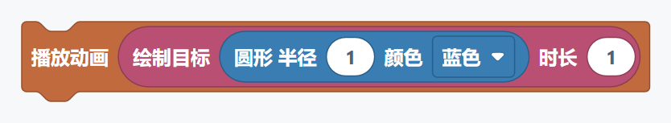
说明： 执行一个动画效果。创建、淡入和变形等效果需要连接到这里才能播放。
visual_python_manim_play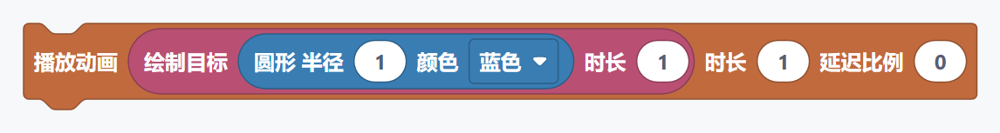
说明： 播放一个动画，并统一设置播放时间和动画内部对象的延迟比例。
visual_python_manim_play_with_options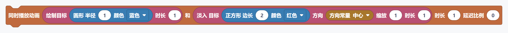
说明： 同时播放两个动画效果。延迟比例为零时同步开始。
visual_python_manim_play_two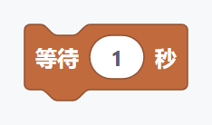
说明： 用于控制 Manim 场景中的“等待”流程，按它在场景执行区域中的先后顺序运行。
visual_python_manim_wait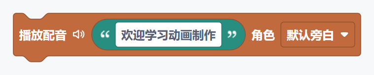
说明： 用于控制 Manim 场景中的“播放配音”流程，按它在场景执行区域中的先后顺序运行。
visual_python_manim_voiceover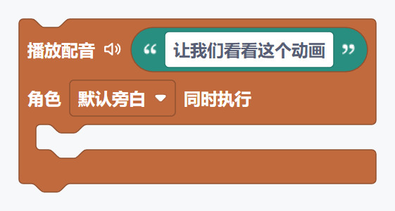
说明： 用于控制 Manim 场景中的“配音并执行动画”流程，按它在场景执行区域中的先后顺序运行。
visual_python_manim_voiceover_with_animation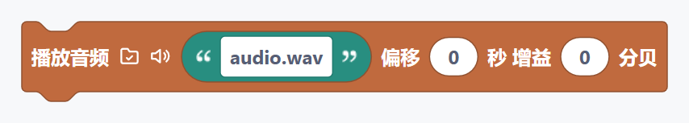
说明： 播放本地音乐、音效或录音。点击路径旁的文件夹图标可选择音频文件；路径也可以手动填写。需要等待音频结束时，请在后面连接等待积木。
visual_python_manim_play_local_audio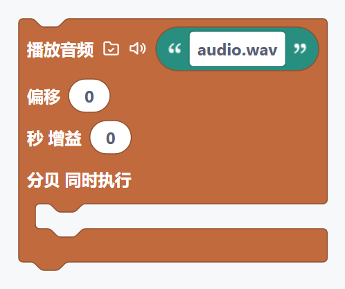
说明： 播放本地音频并同时执行内部动画。动画较短时，渲染前会根据音频时长自动补足等待。
visual_python_manim_play_local_audio_with_animation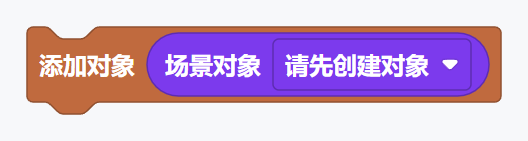
说明： 创建或处理“添加对象”场景对象。创建后的对象通常先保存到变量，再通过对象引用参与动画和布局。
visual_python_manim_add说明： 创建或处理“同时添加两个对象”场景对象。创建后的对象通常先保存到变量，再通过对象引用参与动画和布局。
visual_python_manim_add_two说明： 创建或处理“移除对象”场景对象。创建后的对象通常先保存到变量，再通过对象引用参与动画和布局。
visual_python_manim_remove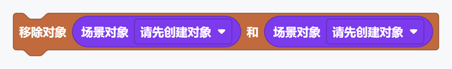
说明： 创建或处理“同时移除两个对象”场景对象。创建后的对象通常先保存到变量，再通过对象引用参与动画和布局。
visual_python_manim_remove_two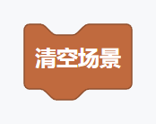
说明： 创建或处理“清空场景”场景对象。创建后的对象通常先保存到变量，再通过对象引用参与动画和布局。
visual_python_manim_clear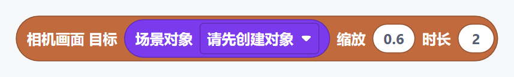
说明： 用于控制 Manim 场景中的“相机画面 目标”流程，按它在场景执行区域中的先后顺序运行。
visual_python_manim_camera_frame_animation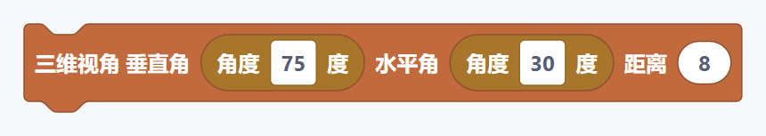
说明： 用于控制 Manim 场景中的“三维视角 垂直角”流程，按它在场景执行区域中的先后顺序运行。
visual_python_manim_3d_camera_orientation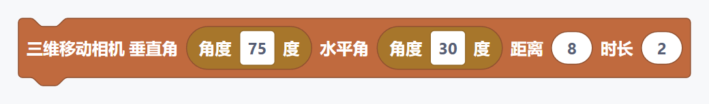
说明： 用于控制 Manim 场景中的“三维移动相机 垂直角”流程，按它在场景执行区域中的先后顺序运行。
visual_python_manim_3d_move_camera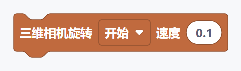
说明： 用于控制 Manim 场景中的“三维相机旋转”流程，按它在场景执行区域中的先后顺序运行。
visual_python_manim_3d_ambient_rotation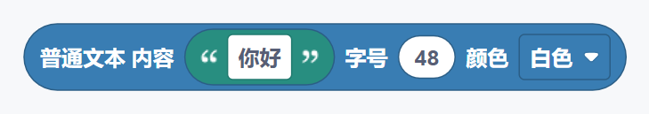
说明： 创建或处理“普通文本 内容”场景对象。创建后的对象通常先保存到变量，再通过对象引用参与动画和布局。
visual_python_manim_plain_text_object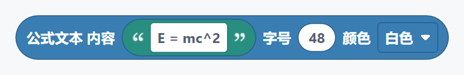
说明： 创建或处理“公式文本 内容”场景对象。创建后的对象通常先保存到变量，再通过对象引用参与动画和布局。
visual_python_manim_tex_object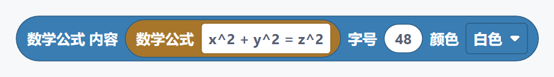
说明： 创建或处理“数学公式 内容”场景对象。创建后的对象通常先保存到变量，再通过对象引用参与动画和布局。
visual_python_manim_mathtex_object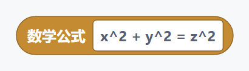
说明： 创建或处理“数学公式”场景对象。创建后的对象通常先保存到变量，再通过对象引用参与动画和布局。
visual_python_manim_formula_value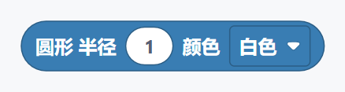
说明： 创建或处理“圆形 半径”场景对象。创建后的对象通常先保存到变量，再通过对象引用参与动画和布局。
visual_python_manim_circle_object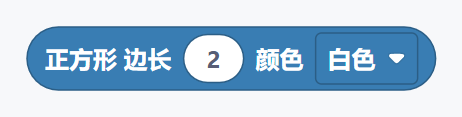
说明： 创建或处理“正方形 边长”场景对象。创建后的对象通常先保存到变量，再通过对象引用参与动画和布局。
visual_python_manim_square_object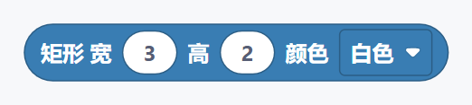
说明： 创建或处理“矩形 宽”场景对象。创建后的对象通常先保存到变量，再通过对象引用参与动画和布局。
visual_python_manim_rectangle_object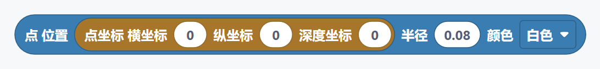
说明： 创建或处理“点 位置”场景对象。创建后的对象通常先保存到变量，再通过对象引用参与动画和布局。
visual_python_manim_dot_object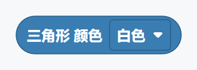
说明： 创建或处理“三角形 颜色”场景对象。创建后的对象通常先保存到变量，再通过对象引用参与动画和布局。
visual_python_manim_triangle_object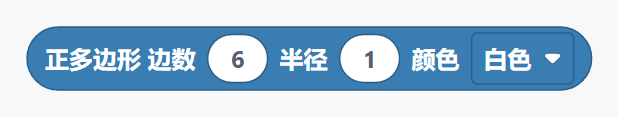
说明： 创建或处理“正多边形 边数”场景对象。创建后的对象通常先保存到变量，再通过对象引用参与动画和布局。
visual_python_manim_regular_polygon_object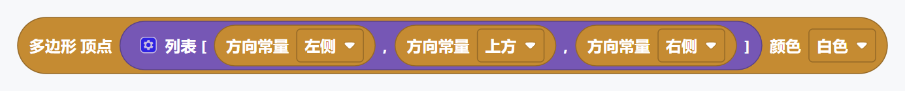
说明： 创建或处理“多边形 顶点”场景对象。创建后的对象通常先保存到变量，再通过对象引用参与动画和布局。
visual_python_manim_polygon_points_object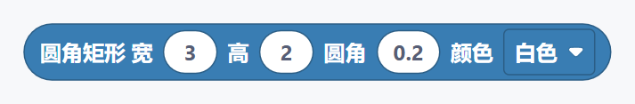
说明： 创建或处理“圆角矩形 宽”场景对象。创建后的对象通常先保存到变量，再通过对象引用参与动画和布局。
visual_python_manim_rounded_rectangle_object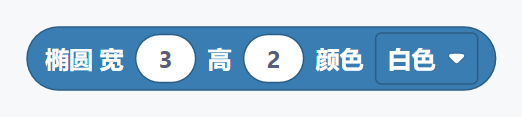
说明： 创建或处理“椭圆 宽”场景对象。创建后的对象通常先保存到变量，再通过对象引用参与动画和布局。
visual_python_manim_ellipse_object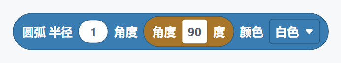
说明： 创建或处理“圆弧 半径”场景对象。创建后的对象通常先保存到变量，再通过对象引用参与动画和布局。
visual_python_manim_arc_object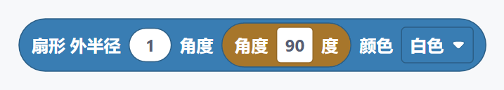
说明： 创建或处理“扇形 外半径”场景对象。创建后的对象通常先保存到变量，再通过对象引用参与动画和布局。
visual_python_manim_sector_object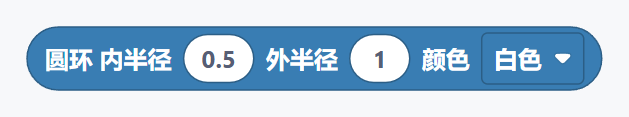
说明： 创建或处理“圆环 内半径”场景对象。创建后的对象通常先保存到变量，再通过对象引用参与动画和布局。
visual_python_manim_annulus_object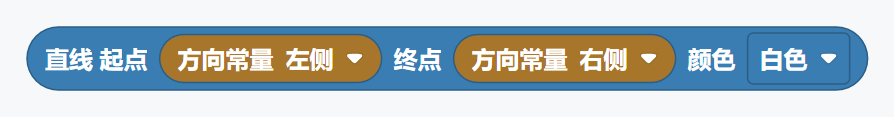
说明： 创建或处理“直线 起点”场景对象。创建后的对象通常先保存到变量，再通过对象引用参与动画和布局。
visual_python_manim_line_segment_object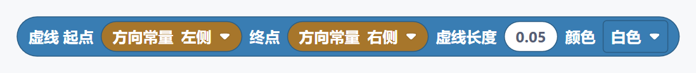
说明： 创建或处理“虚线 起点”场景对象。创建后的对象通常先保存到变量，再通过对象引用参与动画和布局。
visual_python_manim_dashed_line_object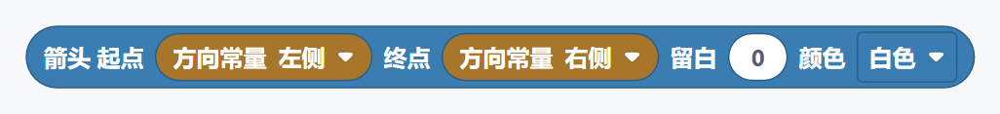
说明： 创建或处理“箭头 起点”场景对象。创建后的对象通常先保存到变量，再通过对象引用参与动画和布局。
visual_python_manim_arrow_object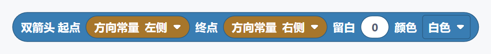
说明： 创建或处理“双箭头 起点”场景对象。创建后的对象通常先保存到变量，再通过对象引用参与动画和布局。
visual_python_manim_double_arrow_object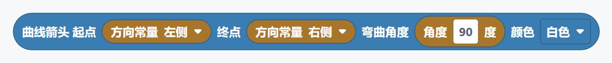
说明： 创建或处理“曲线箭头 起点”场景对象。创建后的对象通常先保存到变量，再通过对象引用参与动画和布局。
visual_python_manim_curved_arrow_object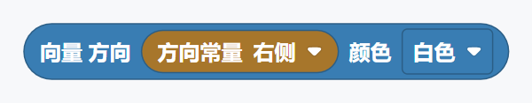
说明： 创建或处理“向量 方向”场景对象。创建后的对象通常先保存到变量，再通过对象引用参与动画和布局。
visual_python_manim_vector_object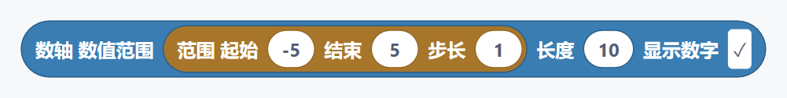
说明： 创建或处理“数轴 数值范围”场景对象。创建后的对象通常先保存到变量，再通过对象引用参与动画和布局。
visual_python_manim_number_line_object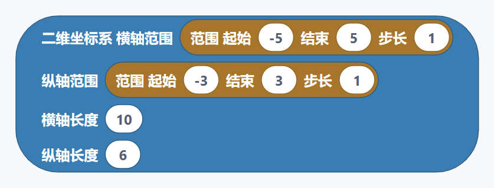
说明： 创建二维坐标系。范围控制刻度区间，长度控制画面中的显示尺寸。
visual_python_manim_axes_object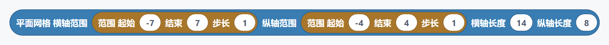
说明： 创建或处理“平面网格 横轴范围”场景对象。创建后的对象通常先保存到变量，再通过对象引用参与动画和布局。
visual_python_manim_number_plane_object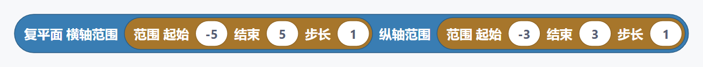
说明： 创建或处理“复平面 横轴范围”场景对象。创建后的对象通常先保存到变量，再通过对象引用参与动画和布局。
visual_python_manim_complex_plane_object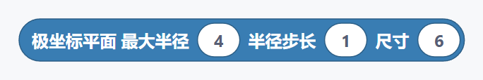
说明： 创建或处理“极坐标平面 最大半径”场景对象。创建后的对象通常先保存到变量，再通过对象引用参与动画和布局。
visual_python_manim_polar_plane_object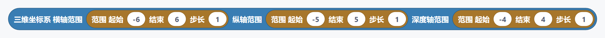
说明： 创建三维坐标系，需要放在三维场景中使用。
visual_python_manim_three_d_axes_object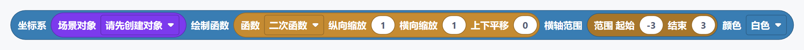
说明： 使用已创建的坐标系绘制函数曲线。请先创建并命名坐标系。
visual_python_manim_axes_plot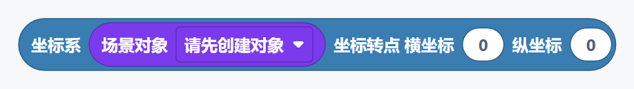
说明： 把数学坐标转换成画面中的位置点。
visual_python_manim_axes_c2p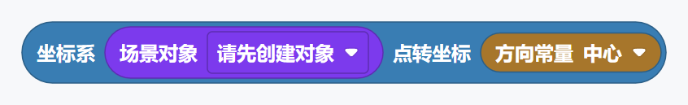
说明： 把画面中的位置点转换成该坐标系内的数学坐标。
visual_python_manim_axes_p2c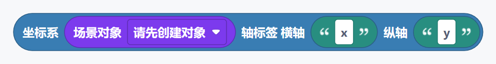
说明： 为已创建的坐标系生成横轴和纵轴标签。
visual_python_manim_axis_labels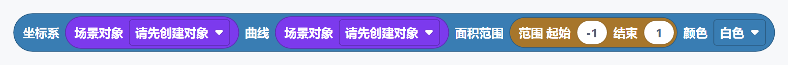
说明： 填充函数曲线与横轴之间的区域。坐标系和曲线必须引用同一套坐标系。
visual_python_manim_axes_area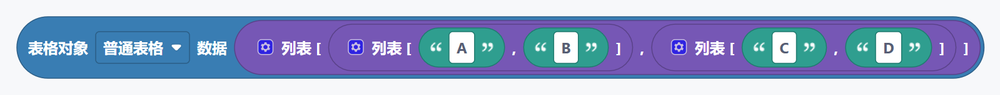
说明： 创建或处理“表格对象”场景对象。创建后的对象通常先保存到变量，再通过对象引用参与动画和布局。
visual_python_manim_table_object说明： 创建或处理“矩阵对象”场景对象。创建后的对象通常先保存到变量，再通过对象引用参与动画和布局。
visual_python_manim_matrix_object说明： 创建或处理“行列式矩阵 数据”场景对象。创建后的对象通常先保存到变量，再通过对象引用参与动画和布局。
visual_python_manim_determinant_object说明： 创建或处理“表格”场景对象。创建后的对象通常先保存到变量，再通过对象引用参与动画和布局。
visual_python_manim_table_highlight_cell说明： 创建或处理“大括号 目标”场景对象。创建后的对象通常先保存到变量，再通过对象引用参与动画和布局。
visual_python_manim_brace说明： 创建或处理“大括号标注 目标”场景对象。创建后的对象通常先保存到变量，再通过对象引用参与动画和布局。
visual_python_manim_brace_label说明： 创建或处理“环绕矩形 目标”场景对象。创建后的对象通常先保存到变量，再通过对象引用参与动画和布局。
visual_python_manim_surrounding_rectangle说明： 创建或处理“角度标注 直线一”场景对象。创建后的对象通常先保存到变量，再通过对象引用参与动画和布局。
visual_python_manim_angle说明： 创建或处理“直角标注 直线一”场景对象。创建后的对象通常先保存到变量，再通过对象引用参与动画和布局。
visual_python_manim_right_angle说明： 创建或处理“球体 半径”场景对象。创建后的对象通常先保存到变量，再通过对象引用参与动画和布局。
visual_python_manim_sphere_object说明： 创建或处理“立方体 边长”场景对象。创建后的对象通常先保存到变量，再通过对象引用参与动画和布局。
visual_python_manim_cube_object说明： 创建或处理“圆锥 底半径”场景对象。创建后的对象通常先保存到变量，再通过对象引用参与动画和布局。
visual_python_manim_cone_object说明： 创建或处理“圆柱 半径”场景对象。创建后的对象通常先保存到变量，再通过对象引用参与动画和布局。
visual_python_manim_cylinder_object说明： 创建或处理“棱柱 尺寸”场景对象。创建后的对象通常先保存到变量，再通过对象引用参与动画和布局。
visual_python_manim_prism_object说明： 创建或处理“圆环面 主半径”场景对象。创建后的对象通常先保存到变量，再通过对象引用参与动画和布局。
visual_python_manim_torus_object说明： 根据两个参数生成三维曲面。精度越高越平滑，但渲染时间也越长。
visual_python_manim_parametric_surface说明： 创建或处理“三维箭头 起点”场景对象。创建后的对象通常先保存到变量，再通过对象引用参与动画和布局。
visual_python_manim_arrow3d_object说明： 创建或处理“组合对象”场景对象。创建后的对象通常先保存到变量，再通过对象引用参与动画和布局。
visual_python_manim_group_object说明： 创建对象并保存名称，之后可通过“场景对象”积木重复使用。
visual_python_manim_assign说明： 创建并命名对象，同时立即把它添加到画面中。
visual_python_manim_assign_add说明： 引用已经创建并命名的对象。下拉列表会根据当前位置筛选可用对象。
visual_python_manim_object_ref说明： 生成“绘制目标”动画效果。它本身不会立即播放，需要连接到“播放动画”等播放控制积木。
visual_python_manim_create_object_animation说明： 生成“书写目标”动画效果。它本身不会立即播放，需要连接到“播放动画”等播放控制积木。
visual_python_manim_write_animation说明： 生成“反向绘制目标”动画效果。它本身不会立即播放，需要连接到“播放动画”等播放控制积木。
visual_python_manim_uncreate_animation说明： 生成“反向书写目标”动画效果。它本身不会立即播放，需要连接到“播放动画”等播放控制积木。
visual_python_manim_unwrite_animation说明： 生成“先描边再填充 目标”动画效果。它本身不会立即播放，需要连接到“播放动画”等播放控制积木。
visual_python_manim_draw_border_then_fill_animation说明： 生成“淡入 目标”动画效果。它本身不会立即播放，需要连接到“播放动画”等播放控制积木。
visual_python_manim_fade_in_animation说明： 生成“淡出 目标”动画效果。它本身不会立即播放，需要连接到“播放动画”等播放控制积木。
visual_python_manim_fade_out_animation说明： 生成“变形 从”动画效果。它本身不会立即播放，需要连接到“播放动画”等播放控制积木。
visual_python_manim_transform_to_animation说明： 生成“替换变形 从”动画效果。它本身不会立即播放，需要连接到“播放动画”等播放控制积木。
visual_python_manim_replacement_transform_animation说明： 生成“复制后变形 从”动画效果。它本身不会立即播放，需要连接到“播放动画”等播放控制积木。
visual_python_manim_transform_from_copy_animation说明： 生成“淡化变形 从”动画效果。它本身不会立即播放，需要连接到“播放动画”等播放控制积木。
visual_python_manim_fade_transform_animation说明： 生成“移动动画 对象”动画效果。它本身不会立即播放，需要连接到“播放动画”等播放控制积木。
visual_python_manim_animate_shift说明： 生成“缩放动画 对象”动画效果。它本身不会立即播放，需要连接到“播放动画”等播放控制积木。
visual_python_manim_animate_scale说明： 生成“旋转动画 对象”动画效果。它本身不会立即播放，需要连接到“播放动画”等播放控制积木。
visual_python_manim_animate_rotate说明： 生成“移动到指定点 对象”动画效果。它本身不会立即播放，需要连接到“播放动画”等播放控制积木。
visual_python_manim_animate_move_to说明： 让对象平滑过渡到指定颜色。
visual_python_manim_animate_set_color说明： 让对象平滑过渡到由两种颜色组成的渐变。
visual_python_manim_animate_set_color_gradient说明： 让对象平滑过渡到两种颜色按指定比例混合后的颜色。
visual_python_manim_animate_set_color_blend说明： 生成“从中心生长 目标”动画效果。它本身不会立即播放，需要连接到“播放动画”等播放控制积木。
visual_python_manim_grow_from_center_animation说明： 生成“从指定点生长 目标”动画效果。它本身不会立即播放，需要连接到“播放动画”等播放控制积木。
visual_python_manim_grow_from_point_animation说明： 生成“从边缘生长 目标”动画效果。它本身不会立即播放，需要连接到“播放动画”等播放控制积木。
visual_python_manim_grow_from_edge_animation说明： 生成“箭头生长 箭头”动画效果。它本身不会立即播放，需要连接到“播放动画”等播放控制积木。
visual_python_manim_grow_arrow_animation说明： 生成“旋转出现 目标”动画效果。它本身不会立即播放，需要连接到“播放动画”等播放控制积木。
visual_python_manim_spin_in_from_nothing_animation说明： 生成“缩小到中心 目标”动画效果。它本身不会立即播放，需要连接到“播放动画”等播放控制积木。
visual_python_manim_shrink_to_center_animation说明： 生成“闪烁强调 目标”动画效果。它本身不会立即播放，需要连接到“播放动画”等播放控制积木。
visual_python_manim_indicate_animation说明： 生成“圈出 目标”动画效果。它本身不会立即播放，需要连接到“播放动画”等播放控制积木。
visual_python_manim_circumscribe_animation说明： 生成“摆动 目标”动画效果。它本身不会立即播放，需要连接到“播放动画”等播放控制积木。
visual_python_manim_wiggle_animation说明： 生成“波浪 目标”动画效果。它本身不会立即播放，需要连接到“播放动画”等播放控制积木。
visual_python_manim_apply_wave_animation说明： 生成“流光 目标”动画效果。它本身不会立即播放，需要连接到“播放动画”等播放控制积木。
visual_python_manim_show_passing_flash_animation说明： 选择常用函数，并通过缩放和平移参数调整曲线形状，无需手写函数代码。
visual_python_manim_function_preset说明： 选择常用三维曲面函数，并调整曲面的高度参数。
visual_python_manim_surface_function_preset说明： 设置三维对象在宽、高、深三个方向上的尺寸。
visual_python_manim_dimensions说明： 提供“方向常量”所需的参数或辅助值，可连接到类型兼容的 Manim 积木输入槽。
visual_python_manim_direction_constant说明： 提供“方向”所需的参数或辅助值，可连接到类型兼容的 Manim 积木输入槽。
visual_python_manim_scaled_direction说明： 提供“数学常量”所需的参数或辅助值，可连接到类型兼容的 Manim 积木输入槽。
visual_python_manim_math_constant说明： 提供“角度”所需的参数或辅助值，可连接到类型兼容的 Manim 积木输入槽。
visual_python_manim_degrees说明： 生成包含起始值、结束值和步长的范围，可用于坐标轴和数轴。
visual_python_manim_range说明： 生成只包含起始值和结束值的范围，可用于函数曲线和面积区间。
visual_python_manim_range_min_max说明： 创建画面中的位置点。二维场景通常把深度坐标设为零。
visual_python_manim_point说明： 提供“三个顶点”所需的参数或辅助值，可连接到类型兼容的 Manim 积木输入槽。
visual_python_manim_point_list_3说明： 提供“二行二列表格数据”所需的参数或辅助值，可连接到类型兼容的 Manim 积木输入槽。
visual_python_manim_table_data_2x2说明： 提供“二行二列数字矩阵”所需的参数或辅助值，可连接到类型兼容的 Manim 积木输入槽。
visual_python_manim_matrix_data_2x2说明： 提供“颜色常量”所需的参数或辅助值，可连接到类型兼容的 Manim 积木输入槽。
visual_python_manim_color_constant说明： 批量播放动画列表。适合同时处理三个或更多动画。
visual_python_manim_play_list说明： 提供“多边形 顶点列表”所需的参数或辅助值，可连接到类型兼容的 Manim 积木输入槽。
visual_python_manim_polygon_from_list_object说明： 提供“组合对象列表”所需的参数或辅助值，可连接到类型兼容的 Manim 积木输入槽。
visual_python_manim_group_from_list_object说明： 提供“数值追踪器 初始值”所需的参数或辅助值，可连接到类型兼容的 Manim 积木输入槽。
visual_python_manim_value_tracker说明： 提供“小数显示 值”所需的参数或辅助值，可连接到类型兼容的 Manim 积木输入槽。
visual_python_manim_decimal_number说明： 提供“带标签变量 值”所需的参数或辅助值，可连接到类型兼容的 Manim 积木输入槽。
visual_python_manim_variable说明： 提供“获取追踪器”所需的参数或辅助值，可连接到类型兼容的 Manim 积木输入槽。
visual_python_manim_tracker_get_value说明： 提供“实时重绘 对象”所需的参数或辅助值，可连接到类型兼容的 Manim 积木输入槽。
visual_python_manim_always_redraw说明： 提供“轨迹路径 目标”所需的参数或辅助值，可连接到类型兼容的 Manim 积木输入槽。
visual_python_manim_traced_path说明： 提供“小数显示跟随追踪器”所需的参数或辅助值，可连接到类型兼容的 Manim 积木输入槽。
visual_python_manim_decimal_follow_tracker说明： 提供“跟随目标更新器”所需的参数或辅助值，可连接到类型兼容的 Manim 积木输入槽。
visual_python_manim_follow_target_updater说明： 提供“清除对象”所需的参数或辅助值，可连接到类型兼容的 Manim 积木输入槽。
visual_python_manim_clear_updaters说明： 提供“追踪器动画”所需的参数或辅助值，可连接到类型兼容的 Manim 积木输入槽。
visual_python_manim_tracker_set_value_animation说明： 提供“设置颜色”所需的参数或辅助值，可连接到类型兼容的 Manim 积木输入槽。
visual_python_manim_set_color说明： 让对象的颜色从起始色平滑过渡到结束色。
visual_python_manim_set_color_gradient说明： 让对象依次经过三种颜色，形成更丰富的渐变。
visual_python_manim_set_color_gradient_three说明： 按比例混合两种颜色。零表示起始色，一表示结束色。
visual_python_manim_set_color_blend说明： 提供“设置透明度”所需的参数或辅助值，可连接到类型兼容的 Manim 积木输入槽。
visual_python_manim_set_opacity说明： 提供“设置填充”所需的参数或辅助值，可连接到类型兼容的 Manim 积木输入槽。
visual_python_manim_set_fill说明： 提供“设置描边”所需的参数或辅助值，可连接到类型兼容的 Manim 积木输入槽。
visual_python_manim_set_stroke说明： 提供“移动到指定点”所需的参数或辅助值，可连接到类型兼容的 Manim 积木输入槽。
visual_python_manim_move_to说明： 提供“相对移动”所需的参数或辅助值，可连接到类型兼容的 Manim 积木输入槽。
visual_python_manim_shift说明： 提供“缩放对象”所需的参数或辅助值，可连接到类型兼容的 Manim 积木输入槽。
visual_python_manim_scale说明： 提供“旋转对象”所需的参数或辅助值，可连接到类型兼容的 Manim 积木输入槽。
visual_python_manim_rotate说明： 提供“移动到画面边缘”所需的参数或辅助值，可连接到类型兼容的 Manim 积木输入槽。
visual_python_manim_to_edge说明： 提供“移动到画面角落”所需的参数或辅助值，可连接到类型兼容的 Manim 积木输入槽。
visual_python_manim_to_corner说明： 提供“排列到目标旁边”所需的参数或辅助值，可连接到类型兼容的 Manim 积木输入槽。
visual_python_manim_next_to说明： 提供“群组”所需的参数或辅助值，可连接到类型兼容的 Manim 积木输入槽。
visual_python_manim_arrange说明： 提供“应用矩阵变换”所需的参数或辅助值，可连接到类型兼容的 Manim 积木输入槽。
visual_python_manim_apply_matrix下面的示例均来自应用内置示例菜单，可以直接打开、修改和渲染。完整积木图之后给出搭建顺序和关键注意事项。
示例目标： 创建一个普通场景，将“Hello Manim”文本保存为对象并播放书写动画。
title。title。关键说明： 这是最小但完整的 Manim 工作流：场景 → 创建对象 → 保存变量 → 引用对象 → 播放动画。
xfrom manim import *class HelloManim(Scene): def construct(self): title = Text( 'Hello Manim', font_size=56, color=BLUE, ) self.play(Write(title, run_time=1.5)) self.wait(1)示例目标： 创建坐标系、二次函数图像和坐标轴标签，并按顺序绘制。
axes。lambda x: 0.5 * x**2。labels。关键说明： 坐标方法必须连接同一个坐标系对象；函数表达式中的自变量应与 lambda 参数保持一致。
xxxxxxxxxxfrom manim import *class AxesAndFunctions(Scene): def construct(self): axes = Axes( x_range=[-4, 4, 1], y_range=[-2, 4, 1], x_length=8, y_length=5, ) graph = axes.plot(lambda x: 0.5 * x**2, x_range=[-3, 3], color=BLUE) labels = axes.get_axis_labels(x_label='x', y_label='y') self.play(Create(axes, run_time=1)) self.play(Create(graph, run_time=1)) self.play(Create(labels, run_time=1)) self.wait(1)示例目标： 让画面中的小数从 0 平滑变化到 10。
tracker。tracker 引用并设置小数位数。关键说明： 追踪器保存数值，显示对象负责把数值画到屏幕上；二者职责不同，通常需要配合使用。
xxxxxxxxxxfrom manim import *class ValueTrackerDemo(Scene): def construct(self): tracker = ValueTracker(0) number_display = always_redraw(lambda: DecimalNumber(tracker.get_value(), num_decimal_places=1)) self.add(number_display) self.play(tracker.animate.set_value(10)) self.wait(1)示例目标： 配合标题、圆、半径和公式，在旁白播放期间同步执行对应动画。
关键说明： 同步配音会按音频时长协调内部动画，并在动画提前结束时自动补足等待时间。输出静态图片时会自动忽略配音。
xxxxxxxxxxfrom manim import *class NarratedCircleArea(Scene): def construct(self): title = Text( '圆的面积', font_size=44, color=BLUE, ).to_edge(UP, buff=0.35) circle = Circle(radius=2, color=BLUE).move_to([-2.5, -0.4, 0]) radius = Line([-2.5, -0.4, 0], [-0.5, -0.4, 0], color=YELLOW) radius_label = MathTex( 'r', font_size=42, color=YELLOW, ).move_to([-1.5, -0.75, 0]) formula = MathTex( 'S=\\pi r^2', font_size=58, color=WHITE, ).move_to([2.6, 0.2, 0]) self.add_sound("visual-python-voiceover.wav") # 播放配音并同步动画：“今天我们用动画认识圆的面积。” | visual-python-tts:begin:eyJ2ZXJzaW9uIjoxLCJ0ZXh0RXhwcmVzc2lvbiI6Iifku4rlpKnmiJHku6znlKjliqjnlLvorqTor4blnIbnmoTpnaLnp6/jgIInIiwidGV4dCI6IuS7iuWkqeaIkeS7rOeUqOWKqOeUu+iupOivhuWchueahOmdouenr+OAgiIsImJsb2NrSWQiOiJjaXJjbGUtYXJlYS1pbnRybyJ9 self.play(Write(title, run_time=1)) self.play(Create(circle, run_time=1.6)) self.wait(0) # 配音同步结束，渲染时自动补足等待 | visual-python-tts:end self.add_sound("visual-python-voiceover.wav") # 播放配音并同步动画：“从圆心到圆周的距离叫作半径，我们用字母 r 表示。” | visual-python-tts:begin:eyJ2ZXJzaW9uIjoxLCJ0ZXh0RXhwcmVzc2lvbiI6Iifku47lnIblv4PliLDlnIblkajnmoTot53nprvlj6vkvZzljYrlvoTvvIzmiJHku6znlKjlrZfmr40gciDooajnpLrjgIInIiwidGV4dCI6IuS7juWchuW/g+WIsOWchuWRqOeahOi3neemu+WPq+S9nOWNiuW+hO+8jOaIkeS7rOeUqOWtl+avjSByIOihqOekuuOAgiIsImJsb2NrSWQiOiJjaXJjbGUtYXJlYS1yYWRpdXMifQ== self.play(Create(radius, run_time=1)) self.play(Write(radius_label, run_time=0.7)) self.wait(0) # 配音同步结束，渲染时自动补足等待 | visual-python-tts:end self.add_sound("visual-python-voiceover.wav") # 播放配音并同步动画：“圆的面积等于圆周率乘以半径的平方。” | visual-python-tts:begin:eyJ2ZXJzaW9uIjoxLCJ0ZXh0RXhwcmVzc2lvbiI6IiflnIbnmoTpnaLnp6/nrYnkuo7lnIblkajnjofkuZjku6XljYrlvoTnmoTlubPmlrnjgIInIiwidGV4dCI6IuWchueahOmdouenr+etieS6juWchuWRqOeOh+S5mOS7peWNiuW+hOeahOW5s+aWueOAgiIsImJsb2NrSWQiOiJjaXJjbGUtYXJlYS1mb3JtdWxhIn0= self.play(Write(formula, run_time=1.5)) self.wait(0) # 配音同步结束，渲染时自动补足等待 | visual-python-tts:end self.add_sound("visual-python-voiceover.wav") # 播放配音（渲染时生成）：“记住公式，S 等于派乘以 r 的平方。” | visual-python-tts:cue:eyJ2ZXJzaW9uIjoxLCJ0ZXh0RXhwcmVzc2lvbiI6IiforrDkvY/lhazlvI/vvIxTIOetieS6jua0vuS5mOS7pSByIOeahOW5s+aWueOAgiciLCJ0ZXh0Ijoi6K6w5L2P5YWs5byP77yMUyDnrYnkuo7mtL7kuZjku6UgciDnmoTlubPmlrnjgIIiLCJibG9ja0lkIjoiY2lyY2xlLWFyZWEtc3VtbWFyeSJ9 self.wait(0.8)动画积木是一个动画值，必须连接到“播放动画”“同时播放动画”或“配音并执行动画”。
对象需要通过创建/书写动画播放，或者使用“添加对象”直接加入场景。只把对象保存到变量并不会自动显示。
先用“创建场景对象”或“创建并添加场景对象”保存对象，再在对象引用的下拉列表中选择同名对象。
PNG 是静态输出，应用会主动忽略配音和本地音频。需要声音时请选择视频输出。
在颜色下拉列表末尾选择“自定义”，使用积木附近的色盘选色；颜色会随工程保存。
文档图片和积木清单由 npm run docs:manim 根据当前源码生成。